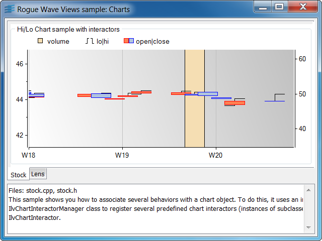
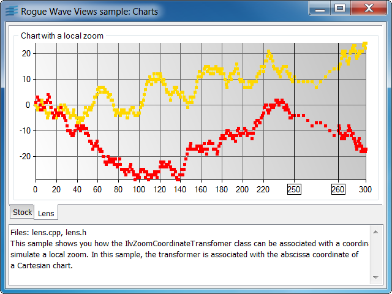

stockAssociation of different behaviors with a chart.
This sample shows you how to associate several behaviors
with a chart object. To do this, it uses an instance of the
IlvChartInteractorManager class to register several
predefined chart interactors (instances of subclasses of
IlvChartInteractor).
This sample defines the following behaviors:
NOTE: If you use a mouse with two buttons, add the following line in the file views.ini in order to make the pan interactor work with the second button of your mouse:
UseRightButton = true
IlvCartesianChartIlvMemoryChartDataIlvChartYValueSetIlvChartCoordinateInfoIlvRectangularScaleDisplayerIlvBarChartDisplayerIlvHiLoOpenCloseChartDisplayerIlvChartLegendIlvChartInteractorManagerIlvChartZoomInteractorlensShows how to set a local zoom on a coordinate.

This sample shows you how the IlvZoomCoordinateTransfomer class can be associated
with a coordinate to simulate a local zoom. In this sample, the transformer is associated
with the abscissa coordinate of a Cartesian chart. Several accelerators allow you to modify
the properties of the transformer:
IlvCartesianChartIlvMarkedPolylineChartDisplayerIlvZoomCoordinateTransfomerIlvZoomScaleStepsUpdater